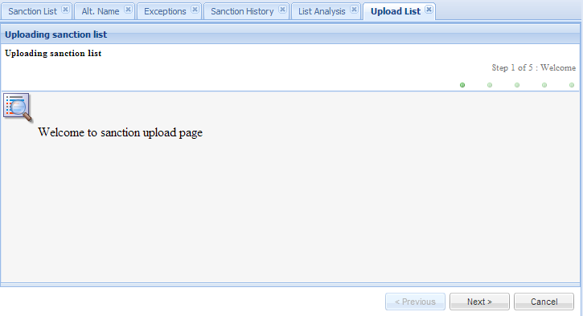
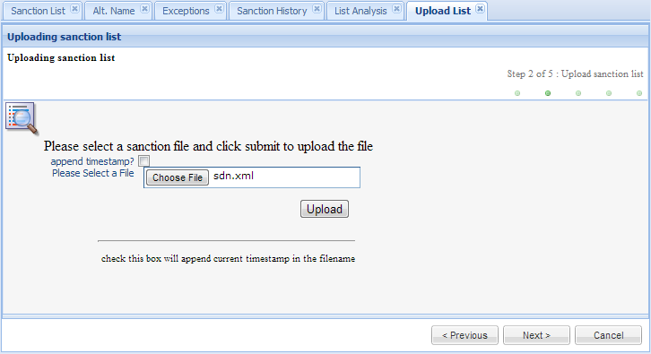
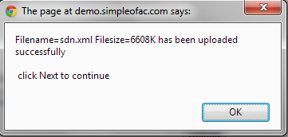
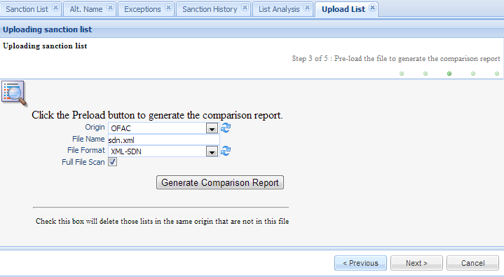
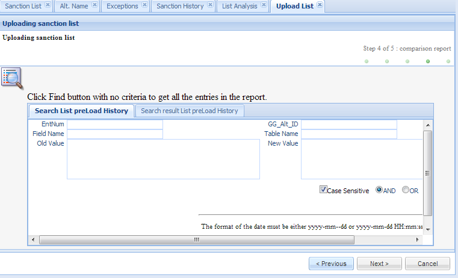

This function allows users to load large volumes of data into List Management.
The following lists are supported and a new plugin can easily be added to support a new list: BIS-DPL, BIS-UNVENRIFIED, CIA WORLD LEADER, EU, HUD-LDP, NS-PLC, OCC UNAUTHORIZED BANK LIST, OFAC SDN, OFSI ENTITY, OFSI INDIVIDUAL, STATE-DEBAR, and UK-HM.
Click the Upload List in the left navigation menu under List management and a new Upload List Tab folder will be created in the right panel.
Click on Next button to go to file upload page.
Click the Browse.. Button to open a window. Then select a file to be uploaded. The file will be saved temporarily in the server. The user can check the “append timestamp” checkbox to append the current timestamp into the file name.
If the same file name exists in the server, it will be automatically renamed by adding _v# in the end of the file, (where # can be 1, 2, 3, etc). For example, if the file name is customer_data_file.csv, it will be renamed to customer_data_file_v1.csv.
Click the Submit Button to upload the file into server. Depending on the size of the file, it may take a couple of minutes to upload.
Click OK to close this popup window. Then click Next Button.
| Field Name | Description |
|---|---|
| Origin | select a value from the origin dropdown list. This is a mandatory field. |
| File Fame | Preset from the previous page. This is the file just uploaded. |
| File Format | The format of this file just uploaded; Select a value from the dropdown list. This is a mandatory field |
| Full File Scan | If this checkbox is checked, the sanction list entry for this ORIGIN that are not in this file will be deleted from the database. |
Click OK to close this popup window; the user can search the preload history and view the preload history result.
If the user is happy with the comparison report, click Next to go to the upload form.
Note
The user should not change the Origin, File Name, File Format or Full File Scan in this page; otherwise, the data loaded into the database will be not the same as the comparison report.